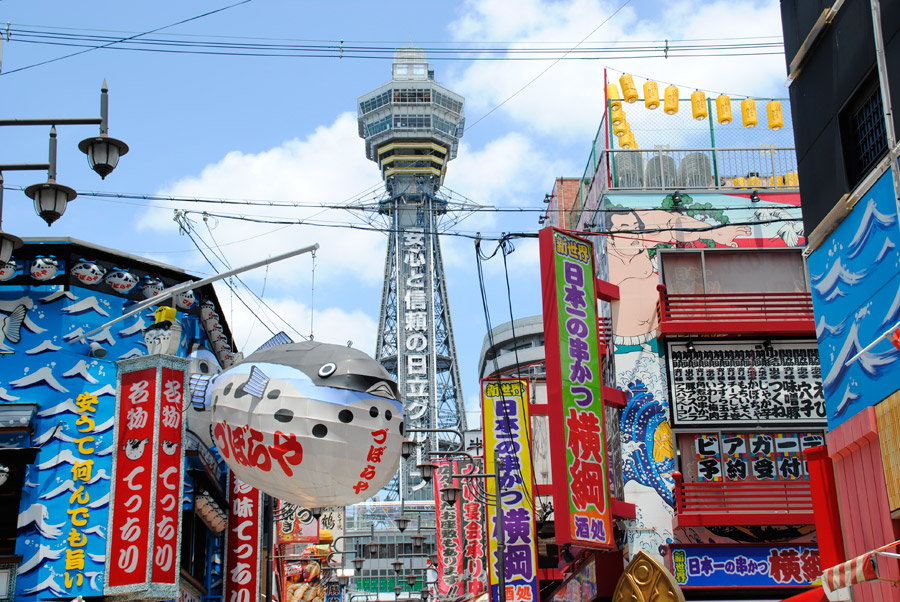

まだ見ぬ日本の魅力を探しに行こう
このサイトは、日本各地の隠れた名所や定番の観光地を紹介し、あなたの旅をより豊かにするためのプラットフォームです。
アプリの主な機能
-
地域別ガイド
都道府県やテーマで観光地を検索。
-
お気に入り保存
気になるスポットをワンタップで保存。
-
モデルコース
滞在時間・目的に合わせた旅程を自動提案。
-
口コミ要約
SNSやレビューの要点をギュッと整理。
注目の観光地
富山
山と水が綺麗。それが贅沢
高松
瀬戸内海の穏やかな景色とアートの街。
沖縄
美しい海と独自の文化が魅力の島々。

大阪
食と笑いの都、合言葉は「なんでやねん！」。
熊本
あんたがたどこさ ひごさ 肥後どこさ 熊本さ
協力メンバー
-
Syntaxkarada
富山担当
-
Member B
高松担当
-
Member C
沖縄担当
-
GIN
大阪担当
-
あなた
熊本担当